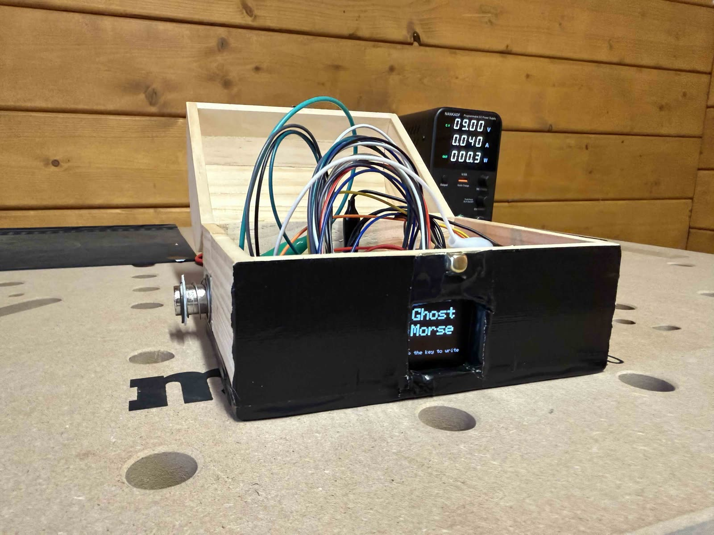

Own build · 2026
Ghost Morse Telegraph
A Morse telegraph built around a single solenoid that works in both directions. Pressed by hand, the plunger keys a message into an Arduino Uno. After seven seconds of silence, the coil fires and the same plunger taps the message back out, as if moved by a ghost's hand.
- MCU
- Arduino Uno
- Display
- SSD1351 OLED · 128 × 128 · hardware SPI
- Actuator
- Solenoid via TIP120 darlington
- Language
- C++ · PlatformIO
- Supply
- Single 9 V rail
The idea
A solenoid is normally either an input or an output. Here it is both. The plunger sits above a push button, so pressing it by hand keys Morse into the Arduino; energising the coil pushes that same plunger down, which is how the device answers. One moving part, two roles.
hand ──► plunger ──► button ──► Uno ──► OLED (live decode)
▲ │
└────── coil ◄───────┘ (replay)
The OLED decodes as you key: the current letter large in the middle, its Morse code small underneath, and the sentence growing along the bottom.
Four states
| State | What happens |
|---|---|
| Idle | The screen shows Ghost Morse and a hint to start tapping. |
| Composing | The letter being keyed is shown large, its Morse code in small print underneath. Committed letters fall down into the sentence at the bottom. |
| Transmitting | After 7 s of silence the sentence slides off the right edge. The solenoid then keys the message back out while the display rebuilds it letter by letter, in step with the clacking. |
| Result | The finished sentence holds on screen for 3 s, then back to idle. |
Timing
A short press is a dot, a press over 250 ms is a dash. 600 ms of silence commits a letter,
1.4 s inserts a word space, and after 7 s the ghost takes over. Everything worth tuning lives
in include/config.h — including kUnitMs, the replay speed, where
higher values simply give the plunger more time to return between taps.
The serial monitor mirrors the whole session, including which letters are still reachable from the symbols keyed so far:
[.] -> E possible: E I S H 5 [..] -> I possible: I S H 5 [....] -> H possible: H 5 >> "H" [..] -> I possible: I S H 5 >> "HI" === Transmitting: "HI" === Done.
Driving the coil
The interesting part of the electronics is not the switching, it is the power. The solenoid hangs directly on the 9 V rail rather than behind the Arduino's regulator, with a TIP120 darlington switching the low side:
9 V+ ──┬─────────────────────────► VIN (Arduino)
│
├──► solenoid (+)
│ solenoid (−) ──┬──► collector (TIP120)
│ │
└──[1N5408, cathode]───┘ (diode points back to 9 V+)
D9 ──[1 kΩ]──► base (TIP120)
9 V− ── GND ──► emitter, Arduino GND ← one common ground, mandatory
Two components in there are not optional. The 1N5408 flyback diode catches the inductive kick when the coil switches off, which would otherwise punch through the transistor. And the 470–1000 µF bulk capacitor across the 9 V rail holds it up during the current spike — without it the rail dips far enough that the Uno browns out and resets in the middle of replaying a message. That failure is what the capacitor is there for, and it took a while to recognise.
| Signal | Uno pin |
|---|---|
| Telegraph key | D2 (to GND, INPUT_PULLUP) |
| Solenoid driver (TIP120 base) | D9 |
| OLED CS / DC / RST | D10 / D7 / D8 |
| OLED DIN / CLK | D11 / D13 — hardware SPI, cannot be moved |
Structure
Each concern gets its own header: a debounced button, a buffer for the current letter's
symbols, a buffer for the full message, the Morse lookup, the solenoid transmitter, the
display driver, and a telegraph.h state machine that ties them together. The
entry point in main.cpp is just setup and loop.
